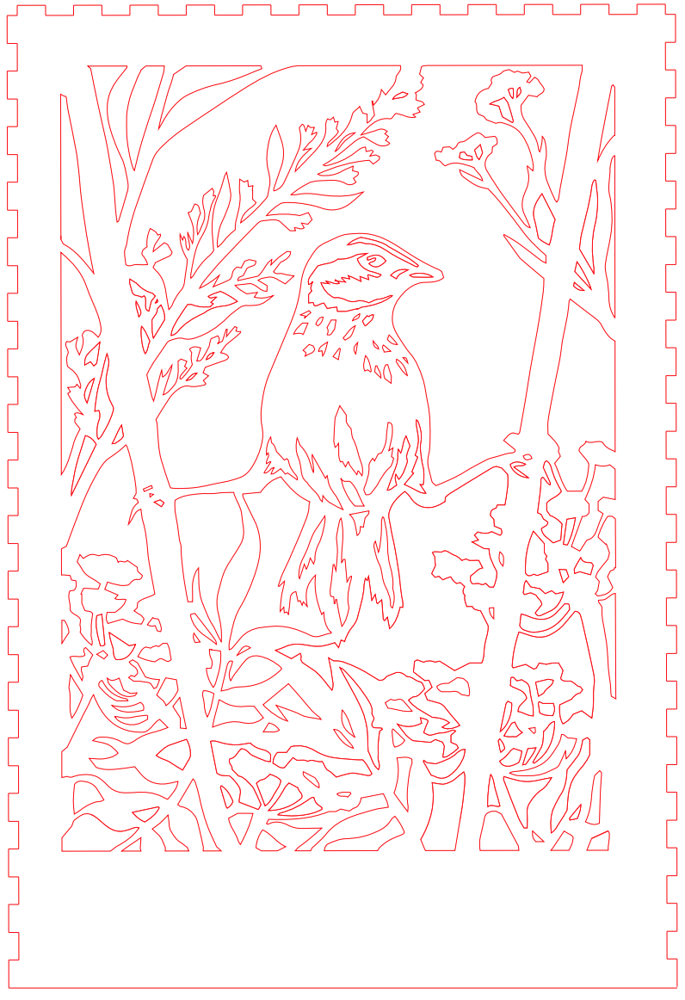
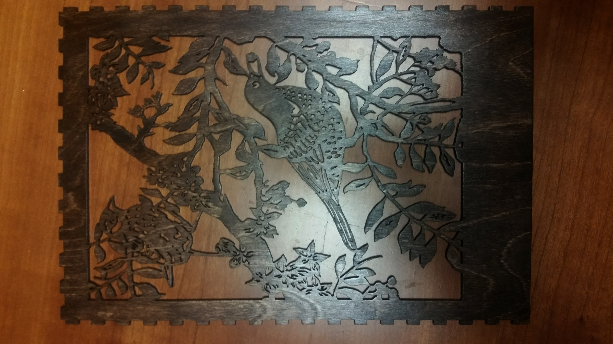
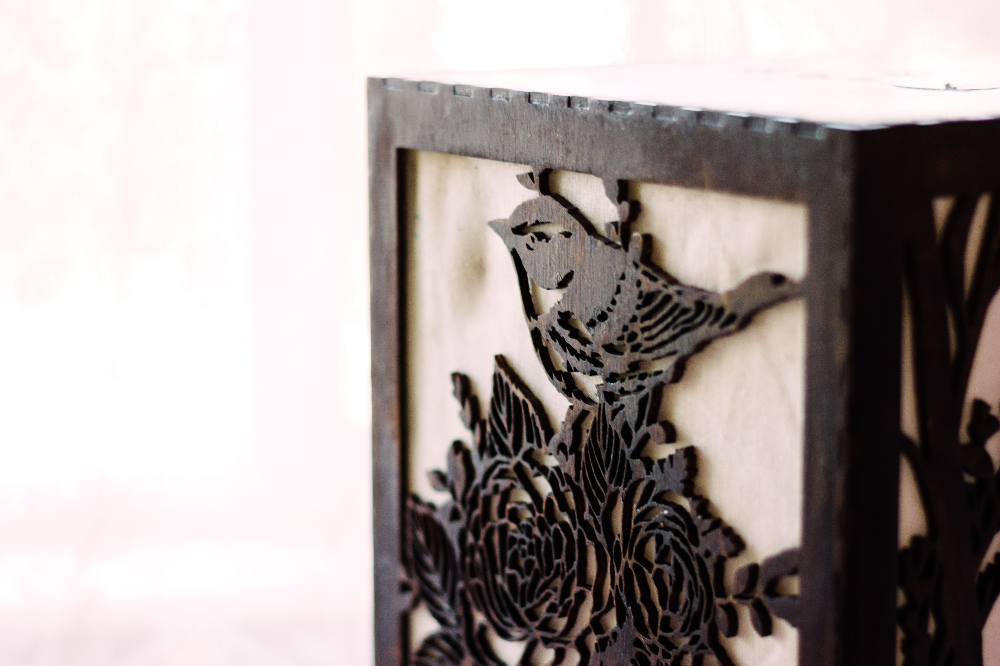

Bird Box

|
Overview
The Bird Box was a personal project and a Christmas present for my girlfriend, who really likes birds and art and design. It is a woodcut box and a dimmable lantern with bird designs on all four sides and personal engravings on top and bottom. For a long time now I've loved art pieces which use light, such as the minimal yet intricate paper sculptures by Hari and Deepti, as well as lots of DIY projects on YouTube like this. So this Christmas, I really wanted to do my own take on something similar!
Materials
- Wires, solder, soldering iron
- Warm white LED strips
- Switch
- 1/8-inch thick plywood
- Laser cutter
- Wood stain
- Wood finish
- Light-colored fabric
- Wood glue, hot glue gun, modge podge
Design
There were a lot of great designs on Pinterest, but I ended up settling for these 4 I liked most:
First I took these into Photoshop, made them black and white, and tweaked around a Levels adjustment layer until the background became mostly white and the shapes black. Then, I took the resulting images into Illustrator and Image Traced them, while adjusting the settings. Generally, I found doing things like lowering the Noise threshold and increasing Paths helped preserve detail from the original design.
After expanding the trace, it was just a matter of trimming or fine-tuning badly traced self-interesecting areas and connecting the edges to an outside border, so that the design wouldn't fall through the wood when cut later.
To make the actual box template, I used this box generator. It was easy to use but gave me two of the sides reversed for some reason, so I ended up just copying the front side again to make the back, and the left side to make the right. There are many other box generators online that work too though.
|  |
For the side I chose to be the back, I cutout 2 holes for the switch and power cord to come through.
The original design for the cover was actually different, with only one swallow on top and the name centered. But after it got engraved off-center, Vivian Liu had the great idea of adding another swallow to the right to balance it out. I thought it looked even better than before!
Wood Work
This part was new and very exciting for me: laser cutting the designs! The Berkeley Makerspace had 1/8th-inch thick plywood and laser cutters, and I had a lot of help from the really talented Vivian Liu. She bought the plywood and showed me how to laser cut, and offered other design suggestions for other parts of the box along the way.
Overall I was really happy with how the final cuts turned out:
After sanding down the wood with 220 grit sandpaper, I gave the it a nice finish, for protection and just to make it look nice. This part took some trial and error and was not as easy as people on YouTube made it seem. I ended up going with a dark brown Walnut-ish stain, and then a laquer coat. I accidentally went way too dark the first time, woops.
Luckily, I was able to back off and remove some of the stain, so that I was able to retain some of the original wood texture and grain. I tried paint remover and paint thinner, and luckily paint thinner seemed to make the stain runny enough so that I could scrape some off and spread it around.
Finally, I applied 4 coats of lacquer to each side, sanding with 220 grit sandpaper between each coat, to get a smooth and shiny end result.
|  |
Inner Workings
Now onto the lantern aspect of the bird box! The bottom side of the box was made up of 3 simple 8 x 8 inch square stacked on top of each other for added height. For the box generator, I made sure that the internal dimensions were 8 x 8 inches so that the 4 sides and cover would slip on snugly over the bottom, like a hat.
On the inside of a box, attached to the base, was a "light pole" which consisted of a woodcut box supported by a stand made up of 4 stacked circular woodcut pieces, with a square cutout in the center of each for the box to fit in.
For the lights, I used warm white LED strips from Amazon, which came with a dimmer as well. I stuck them across all 4 sides of the box, and then soldered all the postive terminals together and all the negatives together with help from my dad. I also cut the cord connecting the dimmer and the power supply to the LEDs and put the switch in between.
Putting it All Together
To get the fabric onto the frame, I stretched my fabric out on a flat surface, covered the inside of the wood with modge podge, and placed the wood facedown on the fabric while it dried.
I wood glued it all together with lots of help from my dad and friend Josh Lin to hold everything in the right place, and then pressing the wood together with textbooks while it dried. Next time I do something like this, I'm going to invest in some wood clamps. There were still some cracks in the box, so I used some putty to fill in the cracks and let it dry overnight.
Once it dried I sanded down the putty (and re-putty'd and re-sanded) a few times to make it as smooth as possible, added more wood stain and lacquered it one more time.
The Bird Box
If I had more time to work on this I probably would've laquered a few more times to get an even more polished finish, but the end result turned out pretty nice for my first real woodworking project!
Of course the next day, my girlfriend (a photographer) staged, took, and edited pictures which came out a lot nicer than my hasty phone camera pics.
|  |